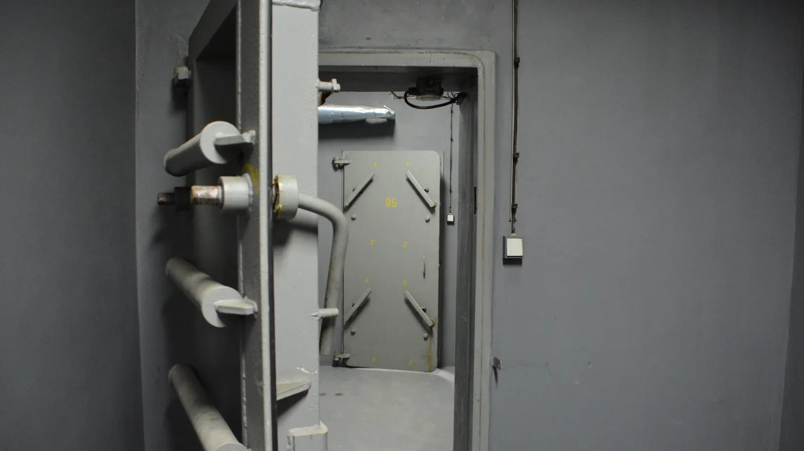
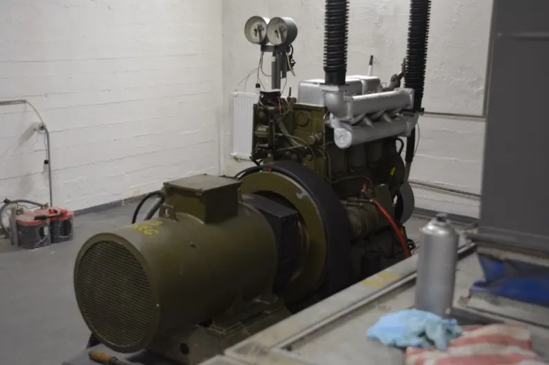
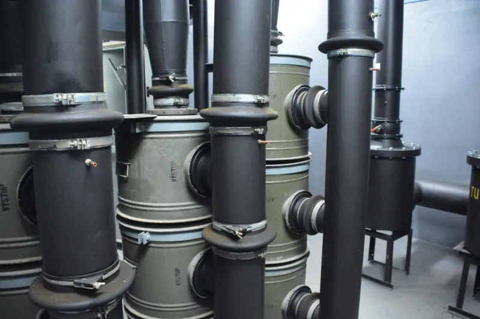
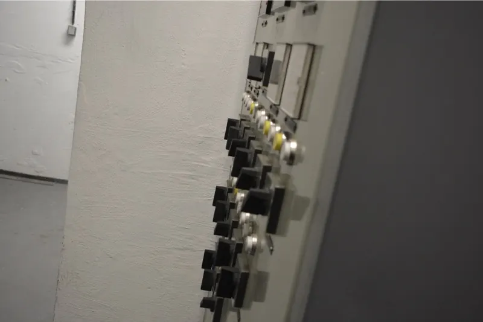
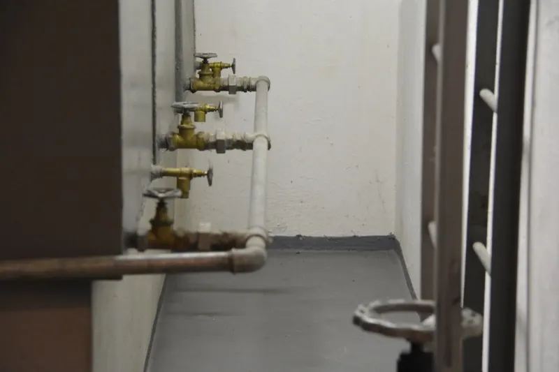
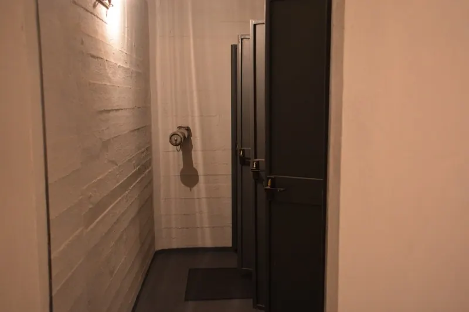
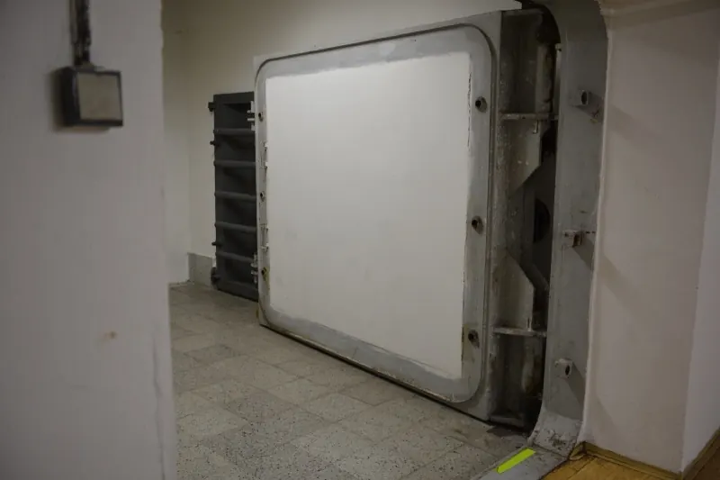
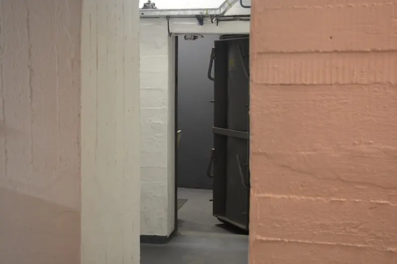

Studentský projekt SSPŠ a G
Sestupte do skutečného krytu civilní ochrany
Výstava Kryt Radlice přibližuje veřejnosti fungování aktivního krytu po technické stránce – filtroventilaci, tlakové uzávěry, záložní zdroje i sbírku předmětů ochrany obyvatelstva.

- 0 Kčvstup zdarma
- 1 hodinadélka prohlídky
- 5 metrůpod povrchem
- 17 °Cstálá teplota
Aktuálně
Slavnostní otevření 18. 6. 2026 od 10:00
Společné otevření Krytu Radlice a výstavy modelu Osvětimi od dalších studentů naší školy. Registrace není nutná – stačí přijít. Těšíme se na vás!
Radlická 591/115, 158 00 Praha 5 – Jinonice
Od vrátnice vás povedou připravené šipky.
O projektu
Výstava Kryt Radlice je studentský projekt, který veřejnosti přibližuje fungování aktivního krytu civilní ochrany – zejména po technické stránce.
Součástí prohlídky je i výstava předmětů spojených s ochranou obyvatelstva: dozimetry, ochranné obleky, polní telefony a další vybavení, které kdysi patřilo ke každodenní přípravě na krizové situace.
Unikátním prvkem krytu bude vlastní digitální řídicí a monitorovací systém, který aktuálně navrhujeme. V blízké době začneme s instalací vlastních kabelů, čidel, rozvaděčů a dalších prvků.
-
Technika v provozu
Filtroventilace, tlakové uzávěry i záložní generátor s alternátorem – vše zblízka a s výkladem.
-
Výstava exponátů
Dozimetry, ochranné obleky, polní telefony a další předměty ochrany obyvatelstva.
-
Vlastní monitoring
Digitální řídicí systém krytu – čidla, rozvaděče a kabeláž instalují sami studenti.
Fotogalerie
Kliknutím na fotografii ji zvětšíte.







Prohlídky
Prohlídky probíhají v předem stanovených termínech – zpravidla v pátek, o víkendu nebo o státním svátku.
Na konkrétní termín je nutné se přihlásit formulářem v sekci rezervace. Vstup je zdarma, na místě je možné přispět na údržbu krytu. Během prohlídky si projdete téměř veškeré prostory – místnosti pro ukrývané, technické zázemí i výstavu – a průvodce vám vysvětlí fungování jednotlivých zařízení.
- Sraz
- Na vrátnici školy, Radlická 591/115, 158 00 Praha 5 – Jinonice
- Délka
- Přibližně 1 hodina, komentovaná prohlídka s průvodcem
- Teplota
- V krytu je stálých 17 °C – zvažte vrstvu oblečení navíc
- Zázemí
- WC je k dispozici před prohlídkou i po ní
- Přístupnost
- Do podzemí se schází po schodech (asi 5 m) – bohužel nevhodné pro vozíčkáře a rodiče s kočárky
- Pravidla
- V celém areálu a během prohlídky platí návštěvnický řád (PDF) (otevře se v novém okně)
Rezervace
Rezervační systém se připravuje
Spustíme ho po slavnostním otevření výstavy.
Do té doby nás můžete navštívit na slavnostním otevření 18. 6. 2026 od 10:00 – bez registrace. Máte-li jakékoli dotazy či potíže, napište nám.
Napsat na ruzicka.ma.2025@ssps.czKontakty
Tým projektu
Vedoucí týmu
Matěj Růžička (otevře se v novém okně)
Členové týmu
Alexandr Svoboda, Daniel Tůma, Václav Šprincl, Adam Hněvkovský, Petr Jakl
E-mail
ruzicka.ma.2025@ssps.cz
Škola
Projekt studentů Smíchovské střední průmyslové školy, gymnázia a Hotelové školy Radlická, příspěvkové organizace.
Kde nás najdete
Areál s krytem (Jinonice)
Radlická 591/115
158 00 Praha 5 – Jinonice
Areál školy (Smíchov)
Preslova 72/25
150 00 Praha 5 – Smíchov

{kind=link}
{kind=link}
{kind=link}
{kind=link}
{kind=link}
{kind=link}
{kind=link}
{kind=link}
{kind=link}
{kind=link}
{kind=link}
{kind=link}